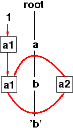

|
|
|
|
General Information
Tutorials
Reference Manuals
Libraries
Translation Tasks
Tools
Administration


|
'Induced' Attribute Dependence CyclesTypical Error Situations Indirect cycles that show up after the so-called induced attribute dependences have been computed. There are abstract trees where an attribute value depends on itself:
ATTR a1,a2 : int; RULE r1 : root ::= a COMPUTE a.a1 = 1; END; RULE r2 : a ::= b COMPUTE b.a1 = ADD(a.a1,b.a2); END; RULE r3 : b ::= 'a' COMPUTE b.a2 = 7; END; RULE r4 : b ::= 'b' COMPUTE b.a2 = ADD(b.a1,1); END; The resulting error message is
ERROR: INDUCED cyclic dependencies;
see OrdInfo, or use gorto
ERROR: evaluation order for b.a1 not found
ERROR: evaluation order for b.a2 not found
 To locate the error write a .ctl file containing the line
ORDER: GRAPH DIRECT_RULE; add it to your .specs or .fw file and make a request for foo.specs:OrdInfo> OrdInfo yields
INDUCED GRAPH FOR RULE r2 ROW 7; COL 6 a ::= b ATNO CLASS ATNAME DEPENDS ON 0 INH a.a1 [] 1 INH b.a1 CYCLIC [0 1 2] 2 SYNT b.a2 CYCLIC [0 1 2] END RULE[this listing is slightly abbreviated and reformatted] |